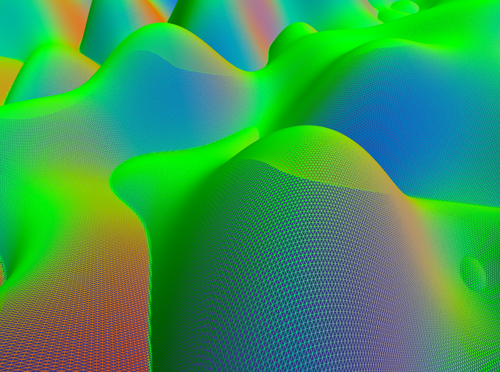
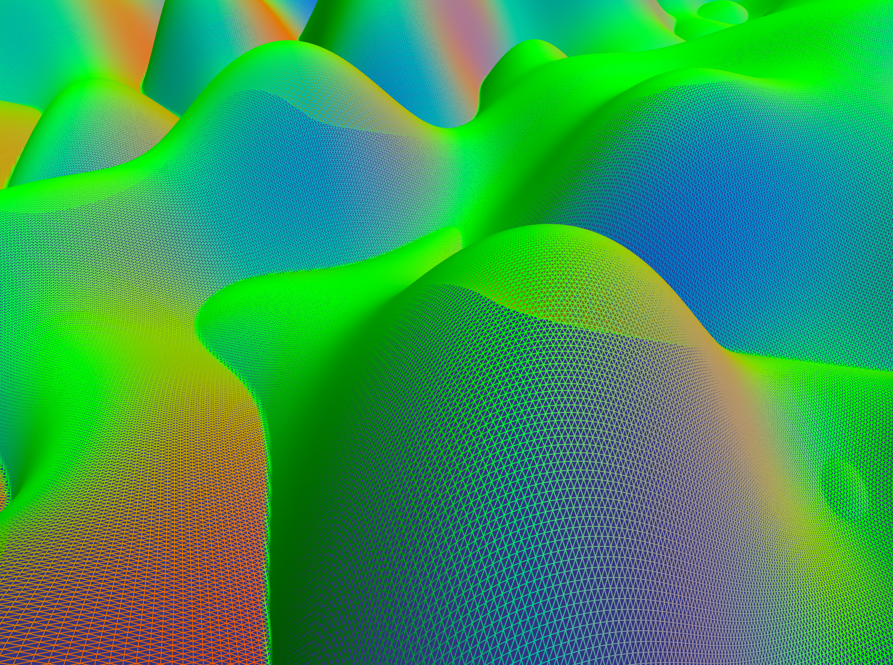
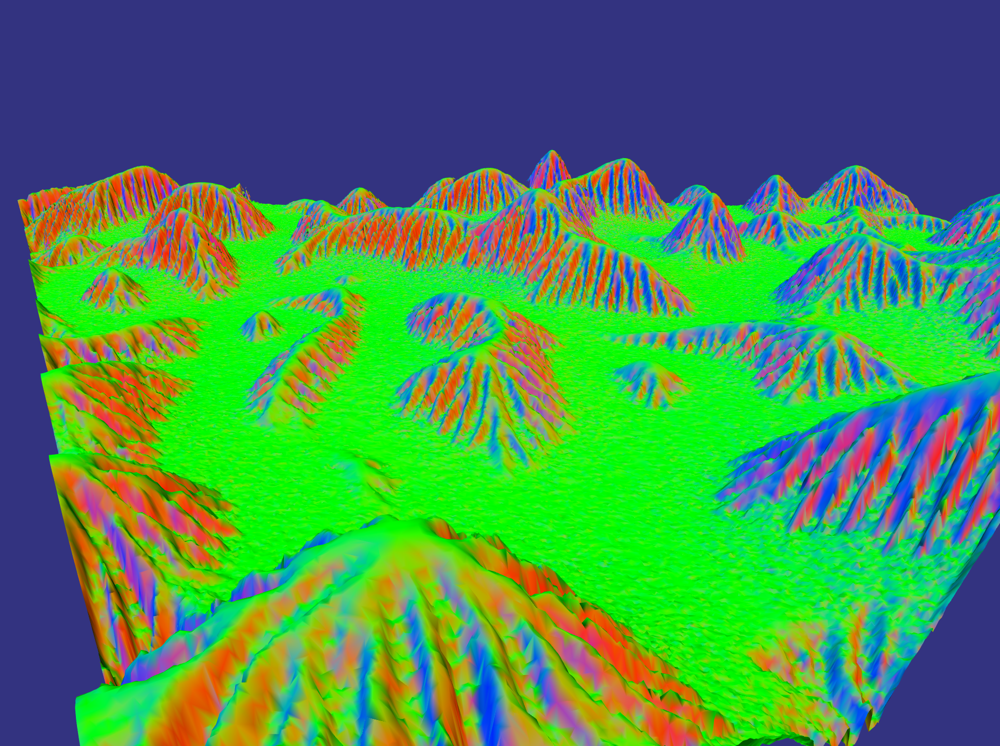
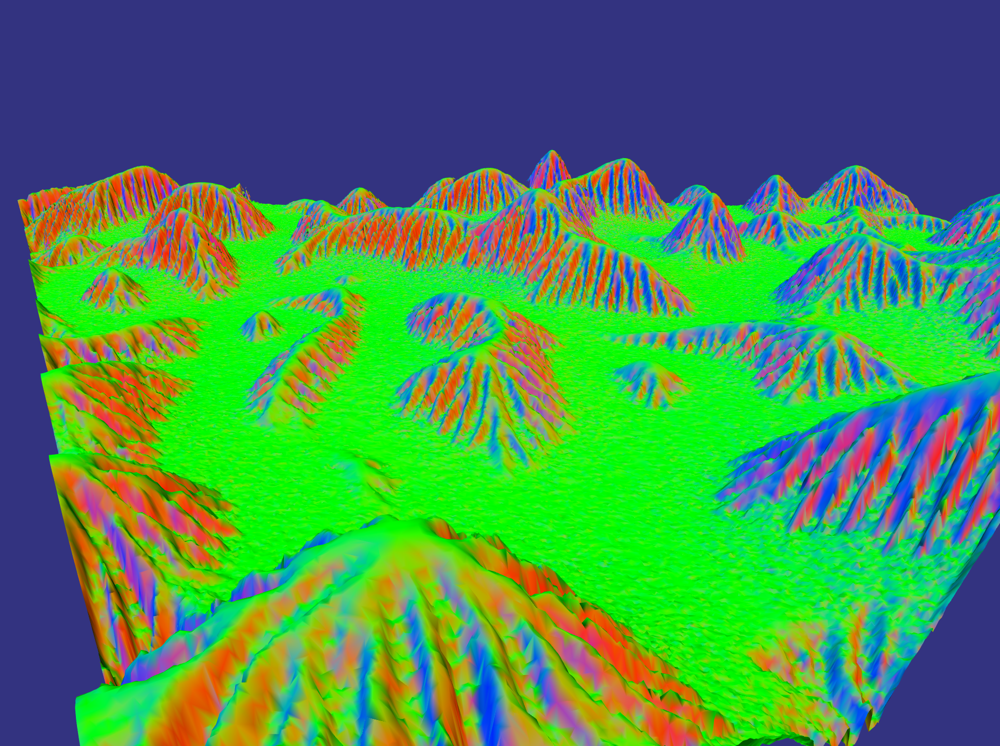

CSE 168 - Rendering Algorithms : Procedural Terrain 6/16/17
Description of implemented features
This project uses noise synthesis methods to generate a heightmap, which is then uniformly triangulated. Specifically, gaussian white noise is generated using the Box-Muller transform then Fast Fourier Transformed (using fftw library) into the frequency domain. I experimented with a few different frequency filters, renders 1 through 7 are all a single gaussian with the un-eroded heightmap output shown in Noise Synthesis plate 3. Renders 8 and 9 (as well as Noise Synthesis plates 1, 2, and 6) have a similar lower frequency gaussian but also a few higher frequency but lower amplitude gaussians to generate a little more interesting heightmap. I also tried a 1/f^b distribution, which is shown in Noise Synthesis plate 5.
Overall, I found that the lone low frequency gaussian eroded the best and that's what is shown in all 5 Erosion plates. Note : all coloring in Noise Synthesis and Erosion plates is 'color-by-normal' so that a vertical normal corresponds to green.
After triangulation, the mesh then undergoes a water-based erosion simulation similar to the one that can be found here. This process simulates water droplets carrying sediment downhill and includes a variety of parameters to determine the amount and type of erosion. The images shown in the erosion section were all eroded with 1M droplets with a max path length of 10,000. This process takes about 5 seconds and scales linearly in the number of droplets.
Once eroded, the mesh is then simplified using my implementation of Garland's '97 quadric error metric. The heightmaps used were 1024x1024, which with two triangles per square gives ~2M triangles. Garland's method allows this to be halved with no visible change (compare renders 2 and 3). Once the mesh is complete, it's written out as a .off file and read in by my ray tracing program.Several renders are shown below with a few different settings. I didn't want to take on texturing in addition to my geometry synthesis so I just re-used the Ashikmin-Shirley BRDF for my terrain and the Fresnel metal for the 'water'. However, I did add a feature to allow materials to be blended together, and two types of blending are shown in plates 4 and 5.
The method in plate 4 is to set a low and a high material and then a range to blend over. The Ashikmin BRDF has 6 parameters and I just applied a linear interpolation over all of them based on the distance between low and high materials. The effort here was to capture a sandy beach but this leaves much of the erosion completely green which is a bit unsatisfactory.
The method in plate 5 is to set a 'sideways' and an 'up' material and then blend over the orientation of the triangle's normal. This solves the problem of plate 4 with coloring the erosion but makes the water-terrain junction worse, ideally both methods would be applied and there's no reason not to do this other than the typical finals time constraint.
Render 1 shows the un-eroded heightmap.Render 2 shows the 1M eroded heightmap.
Render 3 shows the 2M eroded heightmap.
Render 4 shows the 1M eroded heightmap with high-low blending.
Render 5 shows the 1M eroded heightmap with normal-orientation blending.
Render 6 shows the 1M eroded heightmap with high-low blending and without the 'water' plane'.
Render 7 shows the 1M eroded heightmap with normal-orientation blending and without the 'water' plane.
Render 8 shows a 1M multiple gaussian frequency heightmap with high-low blending.
Render 9 shows the same heightmap as in Render 8 tiled four times and with the water plane lowered.
Small note on contrasting approaches to noise synthesis. The method here uses an FFT with frequency domain filtering, however there are many other popular methods based on point-sampled frequency decompositions rather than the sort of batch sampling this method yields. Those methods have the advantage that the frequency distribution does not have to be uniform over the heightmap whereas the FFT version does. The FFT version is typically implemented with periodic boundary conditions, which means it's easily tiled (if you don't mind seeing the same terrain over and over). Render 9 shows an example of this tiling.
 


 
